Eleventy is a simpler static site generator.
FOSDEM 2021
by André Jaenisch on 6th February 2021

jaenis.ch/hobbies/speaking/fosdem2021-javascript-eleventy/
Eleventy is a simpler static site generator. by André Jaenisch is licensed under Attribution 4.0 International

What does Eleventy mean?

What is a Static Site Generator?
Think of a static site generator as a script which takes in data, content and templates, processes them, and outputs a folder full of all the resultant pages and assets.
What makes Eleventy special?
Flexibility
Betting on JavaScript
Not a JavaScript framework
Flexibility
Mix and match template engines.
Define input and output.
Or use it as one-off script.
Betting on JavaScript
Source: Modulecounts
Not a JavaScript framework
Where is it used?
What do people say about it?
Eleventy is almost fascinatingly simple.
– Chris Coyier
Eleventy is a killer static site generator. That’s all.
– Sara Soueidan
Jekyll is dead to me
– Andy Bell
What can you build with it?
Blogs
Conference pages
Conference events
Why is it so popular?
Easy to get started!
npx eleventyFull power of NPM ecosystem
Plugins (filter, shortcodes, transforms)
Authoring in Markdown (mainly)
Support for different template languages
HTML, Markdown, JavaScript, Liquid, Nunjucks, Handlebars, Mustache, EJS, Haml, Pug
Collections
There is a default collection built from tags.
But you also have different ways to define your own.
Data Directory files!
You can pull in async data using this feature
Pagination
Can be used to create pages from data
Community activity
Exchange of ideas
Voting for issues
Voting for issues to determine implementation order
Lodash-style issue management might be a cure
Basically close most issues and use a GitHub issue filter.
Blogging
Turn Jekyll up to Eleventy by Paul Lloyd
Cloudinary Fetch with Eleventy (Respecting Local Development) by Chris Coyier
Give your Eleventy Site Superpowers with Environment Variables by Andy Bell
Architecting data in Eleventy by Sia Karamalegos
Rich Link Previews in Eleventy by Jens-Fabian Goetzmann
Developing plugins
Providing starter repos
Curating examples
Talks
Smashing Podcast Episode 28 With David Darnes: What Is Eleventy?
Training course
Build An Eleventy (11ty) Site From Scratch
Let’s Learn Eleventy! (with Zach Leatherman) — Learn With Jason
Donating
Picture credits
Screenshot of Eleventy logo - MIT licensed
Avatar of Zach Leatherman - MIT licensed
Picture of Bilbo's birthday party taken from J.R.R. Tolkien's The Lord of the Rings Vol. I
Flickr: short tailed opossum by Mark Dumont ( CC BY-NC )
Flickr: possum by Tires 8 ( CC BY-NC )
Flickr: Opossum by Florida Fish and Wildlife ( CC BY-ND )
Picture credits (continued)
Flickr: Opossum by Dandelion Salad ( CC BY-NC-ND )
Flickr: opossum by Alexander Plushev ( CC BY )
Flickr: possum with babies crossing street - Lynchburg, Virginia by Kipp Teague ( CC BY-NC-ND )
Flickr: knit opossum by normanack ( CC BY )
Flickr: baby opossums by Kathy ( CC BY )
Questions?
Thanks for listening!